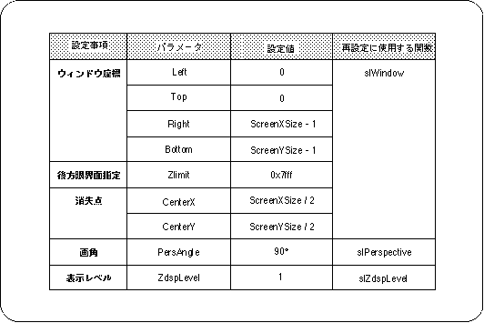

Return to menu | Go to next page
In SGL, when the function “slInitSystem” is executed, various memory system variables are initialized and the following default settings are made.
When system initialization is executed, the default window is set.

When system initialization is executed, scrolling is set as shown in the following table.